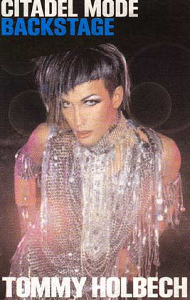
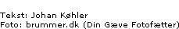

| Februar 2004 |

STYLING
SALAMI-MAKE-UP
Tommy Holbech arbejder som stylist/make-up artist og fortæller os lidt om hverdagen, arbejdet på store shows, samt hans mest ekstreme stylist-oplevelse, der bl.a. handler om salami-make-up.
Her er lidt fra de gemte gemakker bag galionsfigurens glamour.
Tommy er uddannet frisør og arbejder som stylist. Han laver ikke nogen shows på modemessen i år; ikke før modeverdenen vender sig mod Nikolaj Kirke til foråret, hvor han lover nyskabelse og overraskelser.
Forskellen på shows og hverdag er ifølge Tommy, at han til hverdag beskæftiger sig med reel skønhed, mens shows kun forholder sig til æstetik, og derfor er meget mere ekstreme.
Når han arbejder med privatpersoner, har han lagt mærke til at narcissisme er den altoverskyggende kraft i mennesket.
Kraftigere end frygten for døden: Får man at vide, at cigaretterne slår én ihjel, ryger man gladeligt videre. Handler det derimod om et opsvulmet ansigt og grimme tænder, så kan det nok være, cigaretterne har nemmere ved at blive lagt på hylden.
Tommy mener, at shows handler om koncepter: De viser mere en følelse end en praktisk skønhed, så man kan lave fantasi med frie tøjler. Det er hans to vildeste stylinger gode eksempler på:
Til et show i Den Grå Hal arrangerede Tommy 450 heliumballoner som en syv meter høj paryk, akkompagneret af et 16 meter langt slør lavet af endnu 450 heliumballoner. Modellen OTB, fyldte hele catwalken og nåede loftet i Den Grå Hal.
"Det vildeste koncept jeg har lavet, var, hvor vi brugte tyndt, skiveskåret pålæg som mæke-up. Der var salami-hud, rullepølse-øjenlåg og andre langt ude ting. Det så totalt æstetisk ud, men man kunne kun have det på i to minutter, så skulle det af igen."
Tommy Holbeck advarer mod brugen af tre-stjernet salami, der ætser huden og smitter så kraftigt af, at farven hænger ved i flere dage. "Jeg har ikke kunnet spise salami siden", siger Tommy (Elektrikal records, useless salvation og dunst).

Print denne side